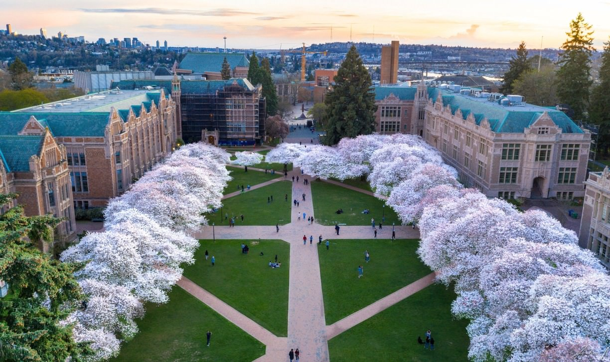
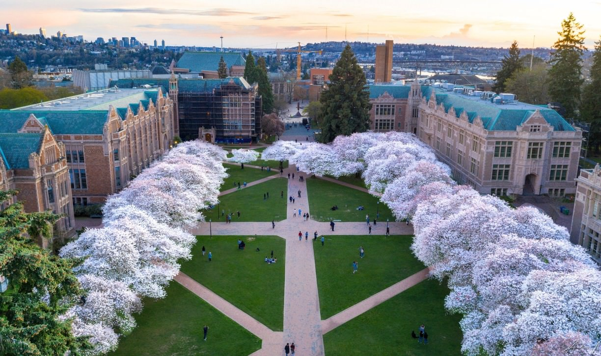

ABOUT ME
Currently a computer science student at the University of Washington in Seattle.
 

A short biography:
I'm currently pursuing a Bachelor's degree in Computer Science at UW Seattle, and trying to use CS to have a positive impact and do good in the world. I graduated from Skyline High School in Sammamish with my IB Diploma in 2019. I am a second degree black belt in Tae Kwon Do, martial arts instructor and math tutor, and was part of programs such as Girls Who Code, DECA, Washington Aerospace Scholars, and Rocketry Club in high school. In college, I've joined the Impact++, Engineers Without Borders, and Business Ethics Association RSOs at UW. I also enjoy traveling, hiking, baking, and drawing in my free time!
~
Why I created this website:
I wanted to brush up on my HTML skills and using GitHub, learn how to create and host a personal page, use this as a kind of online and extended resume/more about me page, do a quick and fun project before my summer activities start, and use this myself to look back at my life so far.